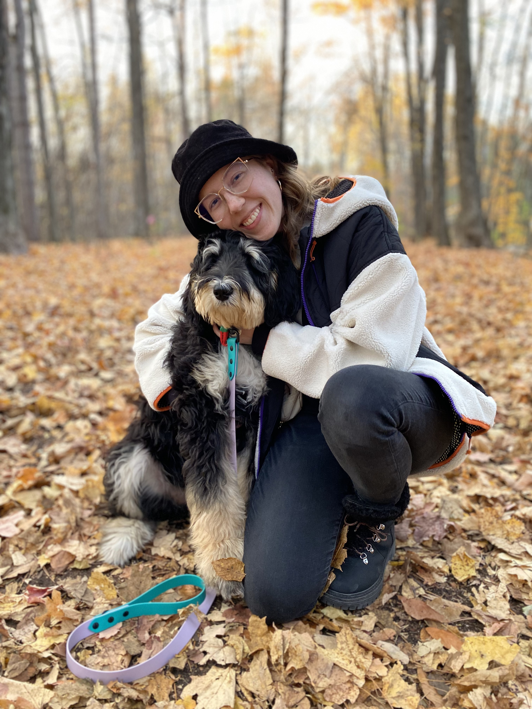
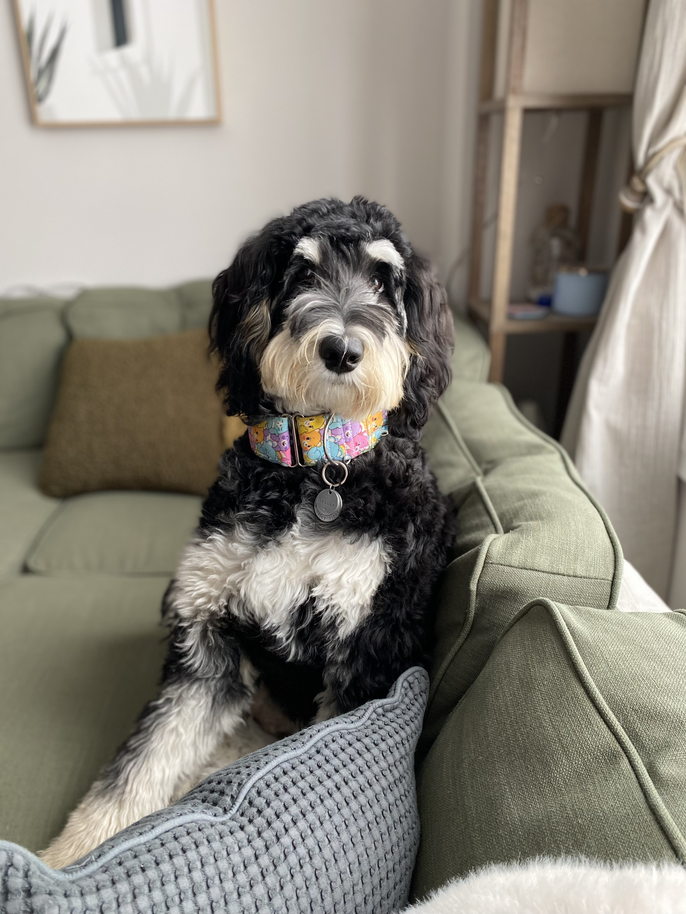
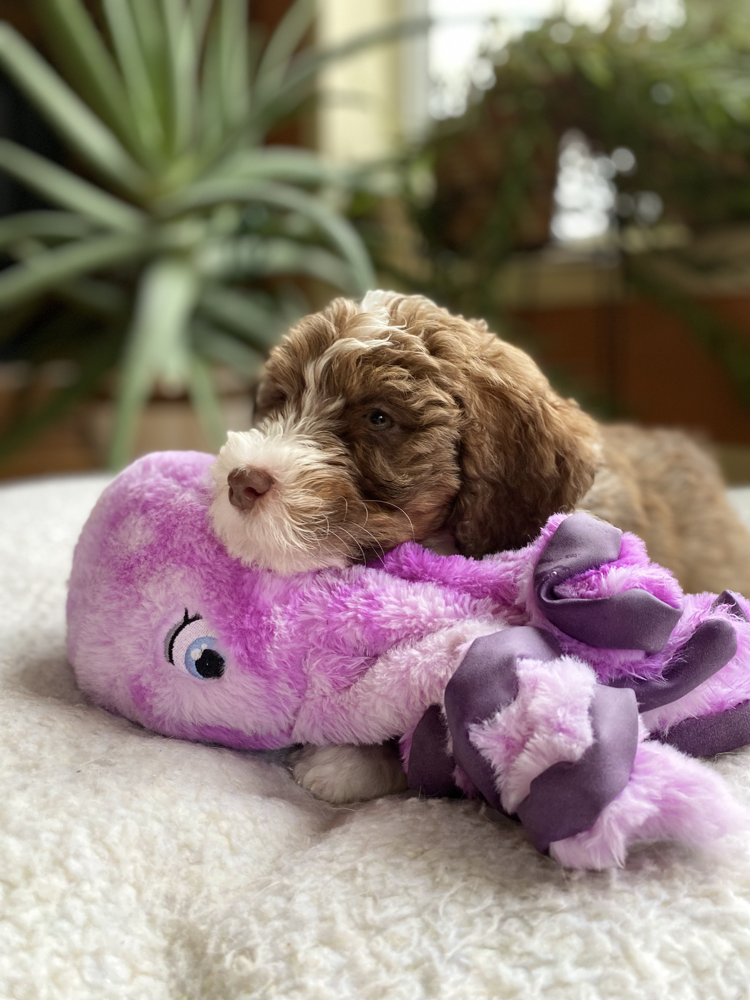

About Me
Dog lover. Adventure seeker. Coffee enthusiast.
Hobbies:
- Watercolour
- Photography
- Camping
- Travelling
Self-growth is extremely important to me, and I pride myself on being self-aware and having the willingness to change and grow as an individual. For over a year, I focused on myself and tried to figure out a career path led by my passions. It was a difficult journey of self-growth; I sometimes felt lost and unsure about my purpose.
I previously studied at Carleton University for Communication and Media Studies. I worked full-time for three years as a Sales and Marketing Project Manager for a home-building company. I enjoyed this for the years I was working there, however, over time, I realized it was not meant for me anymore. I am grateful for the experience as it opened my eyes to the design world and led me to apply to IMD at Algonquin College. I am very passionate about travelling, my dogs, photography, design and living every day to the fullest.
My dogs' names are Pepper and Olive. Pepper is an 8 month old Bernedoodle born on May 27th, 2022. Olive is a 10 week old Aussie Bernedoodle born on November 23rd, 2022. They are both such fun, energetic puppies and absolutely adore each other. We love going on adventures and exploring the trails around our area.
 We all move forward
when we recognize how resilient
and striking women
around us are.
- Rupi Kaur
You do not just wake up and become the butterfly
growth is a process
- Rupi Kaur